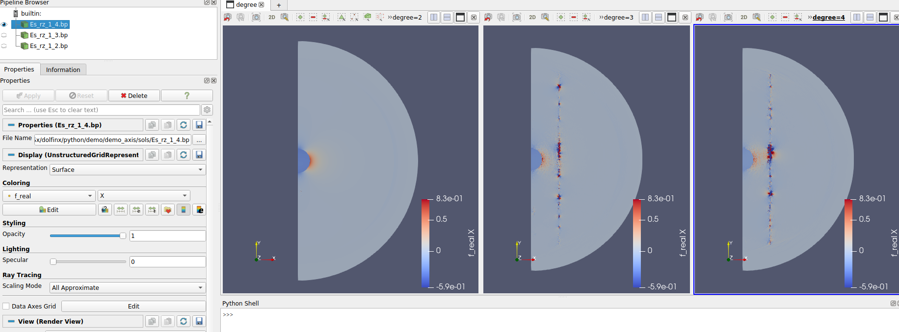

GSoC 2022 - Expanding FEniCSx electromagnetic demos
Contents
GSoC 2022 - Expanding FEniCSx electromagnetic demos#
In this website, I will provide an overview of my work as a GSoC 2022 contributor for the FEniCS project (sponsored by NumFOCUS) and its main repository DOLFINx. The goal of the project was to expand DOLFINx electromagnetic demos, in order to promote the use of the FEniCSx environment for solving electromagnetic and photonic problems. During GSoC 2022, I have developed demos showing how to:
implement scattering boundary conditions;
implement perfectly matched layers;
solve electromagnetic eigenvalue problems;
solve 3D electromagnetic problems for axisymmetric structures.
All the problems are solved within the time-harmonic approximation for simple
geometries, but can be easily generalized to more complicated study cases.
The documentation for the demos has been provided under the form of Python
comments that can be visualized as text and math formula in Jupyter notebook
by converting the .py files with Jupytext. Besides,
each demo contains tests for comparing the DOLFINx outputs with the analytical results
for each problem.
This website has been built with Jupyter book, and on the left-hand side you can find the Jupyter notebooks of the demos I developed. In this way, you can directly visualize the mathematical documentation in the demos, the code, the outputs, and you can play with the settings by using Binder (just click on the icon).
With respect to the original plan, we have not developed the demo showing how to
handle complex numbers in DOLFINx, and the demo showing how to use the MPI.COMM_SELF
communicator. In the first case, the demo was considered unnecessary, since all the
main features of complex numbers in DOLFINx naturally arises in all electromagnetic demos, which
widely implement them. In the second case, the demo was substituted with the eigenvalue
demo, which was not planned at first. However, I plan to work on the MPI.COMM_SELF demo
in the weeks following the end of GSoC 2022.
In my opinion, the original goal has been successfully reached. Indeed, even if many pull
requests are still open, the main work for the demos have been done, and they just need
to pass the final rounds of reviews by FEniCSx reviewers to be finally merged into
the main DOLFINx branch.
List of contributions#
Pull Requests#
PR #2237 (merged): this pull request adds the demo showing how to set a time-harmonic electromagnetic problem with scattering boundary conditions:
demo_scattering_boundary_conditions.py: solves the time-harmonic problem of a TM-polarized plane wave scattered by a gold wire using scattering boundary conditions;mesh_wire.py: generates the mesh for the demo;analytical_efficiencies_wire.py: calculates the analytical efficiencies for a wire;
PR #2276 (merged): this pull request adds the demo showing how to set a time-harmonic electromagnetic problem with perfectly matched layers:
demo_pml.py: solves the time-harmonic problem of a TM-polarized plane wave scattered by a gold wire using perfectly matched layers;mesh_wire_pml.py: generates the mesh for the demo;analytical_efficiencies_wire.py: calculates the analytical efficiencies for a wire;
PR #2338 (merged): this pull request adds the demo showing how to solve a time-harmonic electromagnetic eigenvalue problem with DOLFINx and SLEPc:
demo_waveguide.py: solves the eigenvalue problem associated with an electromagnetic half-loaded waveguide with SLEPc;analytical_modes.py: verifies if FEniCSx modes are consistent with the equations for the analytical modes;
PR #2339 (merged): this pull request adds the demo showing how to solve a time-harmonic electromagnetic problem for an axisymmetric geometry:
demo_axis.py: solves the time-harmonic problem of a plane wave scattered by a sphere within the axisymmetric approximation, using perfectly matched layersmesh_sphere_axis.py: generates the mesh for the demo
PR #2357 (merged): this pull request adds the line
from dolfinx.io import gmshioinpython/io/__init__.pyso thatgmshiois considered a module in DOLFINx. Besides, it also removes an unnecessarygmshiostring in thehas_adios2conditional block.
Issues#
GH issue #2343 (closed as completed): issue showing an inconsistency when solving problems with
MixedElementhavingLagrangeelements. This issue arose during the writing for PR #2339, when I noticed different DOLFINx outputs when changing thedegreeofLagrangeelements. The root of this issue was a wrong permutation insideMixedElement, which was then fixed by PR #2347.
What’s next#
The plan after the end of the Google Summer of Code is the following:
Work on merging the open pull requests;
Develop a demo showing how to use the
MPI.COMM_SELFcommunicator; this will be particularly useful when solving parameterized problem as in the axisymmetric case, whereMPI.COMM_SELFwould allow us to split the multiple harmonic numbers over multiple processors;Animate DOLFINx solutions with PyVista;
Project axisymmetric solutions in 3D using PyVista (e.g. by using extrude rotation);
Develop more complicated demos (e.g. demos involving periodic boundary conditions);
Join more discussions on discourse.
Highlights of the demos#
Demo #1: Scattering Boundary Conditions#
This demo shows how to implement scattering boundary conditions for a time-harmonic electromagnetic problem. In particular, we show how to use scattering boundary conditions to calculate the scattering of a TM-polarized plane wave from an infinite gold wire. The demo can also be considered an introductory demo for electromagnetic problems, since it also shows how to derive the weak form of the corresponding Maxwell’s equations. Indeed, we start from these equations (Maxwell’s equations + scattering boundary conditions):
and show all the steps to arrive at the final weak form:
which we implement in DOLFINx in the following way:
F = - ufl.inner(ufl.curl(Es), ufl.curl(v)) * dDom \
+ eps * (k0**2) * ufl.inner(Es, v) * dDom \
+ (k0**2) * (eps - eps_bkg) * ufl.inner(Eb, v) * dDom \
+ (1j * k0 * n_bkg + 1 / (2 * r)) \
* ufl.inner(ufl.cross(Es_3d, n_3d), ufl.cross(v_3d, n_3d)) * dsbc
Besides, we also show how to implement the background field \( \mathbf{E}_b = -\sin\theta e^{j (k_xx+k_yy)}\hat{\mathbf{u}}_xv+ \cos\theta e^{j (k_xx+k_yy)}\hat{\mathbf{u}}_y\):
class BackgroundElectricField:
def __init__(self, theta, n_b, k0):
self.theta = theta
self.k0 = k0
self.n_b = n_b
def eval(self, x):
kx = self.n_b * self.k0 * np.cos(self.theta)
ky = self.n_b * self.k0 * np.sin(self.theta)
phi = kx * x[0] + ky * x[1]
ax = np.sin(self.theta)
ay = np.cos(self.theta)
return (-ax * np.exp(1j * phi), ay * np.exp(1j * phi))
and how to calculate the efficiencies:
Z0 = np.sqrt(mu_0 / epsilon_0)
# Magnetic field H
Hsh_3d = -1j * curl_2d(Esh) / (Z0 * k0 * n_bkg)
Esh_3d = ufl.as_vector((Esh[0], Esh[1], 0))
E_3d = ufl.as_vector((E[0], E[1], 0))
# Intensity of the electromagnetic fields I0 = 0.5*E0**2/Z0
# E0 = np.sqrt(ax**2 + ay**2) = 1, see background_electric_field
I0 = 0.5 / Z0
# Geometrical cross section of the wire
gcs = 2 * radius_wire
# Quantities for the calculation of efficiencies
P = 0.5 * ufl.inner(ufl.cross(Esh_3d, ufl.conj(Hsh_3d)), n_3d)
Q = 0.5 * np.imag(eps_au) * k0 * (ufl.inner(E_3d, E_3d)) / Z0 / n_bkg
# Define integration domain for the wire
dAu = dx(au_tag)
# Normalized absorption efficiency
q_abs_fenics_proc = (fem.assemble_scalar(fem.form(Q * dAu)) / gcs / I0).real
# Sum results from all MPI processes
q_abs_fenics = domain.comm.allreduce(q_abs_fenics_proc, op=MPI.SUM)
# Normalized scattering efficiency
q_sca_fenics_proc = (fem.assemble_scalar(fem.form(P * dsbc)) / gcs / I0).real
# Sum results from all MPI processes
q_sca_fenics = domain.comm.allreduce(q_sca_fenics_proc, op=MPI.SUM)
We compared these efficiencies with analytical ones (by means of a function in analytical_efficiencies_wire.py) to test our demo. In the end, we get
an error much smaller than \(1\%\), as certified by the final output,and
therefore we can say that our demo works correctly.
The analytical absorption efficiency is 1.2115253567863489
The numerical absorption efficiency is 1.210977254477182
The error is 0.04524067994918296%
The analytical scattering efficiency is 0.9481819974744393
The numerical scattering efficiency is 0.947864860367565
The error is 0.033446860172311944%
The analytical extinction efficiency is 2.1597073542607883
The numerical extinction efficiency is 2.158842114844747
The error is 0.040062808247346045%
As a final treat, here below you can see the animation of the DOLFINx solution post-processed in paraview:

Demo #2: Perfectly Matched Layers#
In the second demo, we show how to implement perfectly matched layers (shortly PMLs) for the same problem solved in the first demo, i.e. the scattering of a TM-polarized plane wave by an infinite gold wire. Perfectly matched layers are artificial layers surrounding the domain that gradually absorb outgoing waves impinging on them, and are extensively used in time-harmonic electromagnetic problems to solve the corresponding PDE within a finite domain. However, their mathematical implementation can be quite tricky, and therefore showing the math and the corresponding DOLFINx implementation is crucial for allowing users to quickly use FEniCSx to solve photonic problems.
For this demo, we chose to use a square PML layer. In order to define PML equation, we use a complex coordinate transformation of this kind in the PML domain:
We then calculate the Jacobian associated with this transformation:
Finally, we can express the complex coordinate transformation as a material transformation within the PML, therefore having the following anisotropic, inhomogeneous, and complex relative permittivity \(\boldsymbol{\varepsilon}_{pml}\) and permeability \(\boldsymbol{\mu}_{pml}\):
All these steps have been defined in DOLFINx using the following functions:
def pml_coordinates(x, alpha: float, k0: complex,
l_dom: float, l_pml: float):
return (x + 1j * alpha / k0 * x
* (algebra.Abs(x) - l_dom / 2)
/ (l_pml / 2 - l_dom / 2)**2
def create_eps_mu(pml, eps_bkg, mu_bkg):
J = grad(pml)
# Transform the 2x2 Jacobian into a 3x3 matrix.
J = as_matrix(((J[0, 0], 0, 0),
(0, J[1, 1], 0),
(0, 0, 1)))
A = inv(J)
eps_pml = det(J) * A * eps_bkg * transpose(A)
mu_pml = det(J) * A * mu_bkg * transpose(A)
return eps_pml, mu_pml
# PML corners
xy_pml = as_vector((pml_coordinates(x[0], alpha, k0, l_dom, l_pml),
pml_coordinates(x[1], alpha, k0, l_dom, l_pml)))
# PML rectangles along x
x_pml = as_vector((pml_coordinates(x[0], alpha, k0, l_dom, l_pml), x[1]))
# PML rectangles along y
y_pml = as_vector((x[0], pml_coordinates(x[1], alpha, k0, l_dom, l_pml)))
eps_x, mu_x = create_eps_mu(x_pml, eps_bkg, 1)
eps_y, mu_y = create_eps_mu(y_pml, eps_bkg, 1)
eps_xy, mu_xy = create_eps_mu(xy_pml, eps_bkg, 1)
We need to define multiple coordinate transformation xy_pml, x_pml and y_pml since in the corners of the PML both coordinates are transformed, while in the rest of the PML just
one of them is. In the end, we can implement the weak form in DOLFINx in this way:
F = - inner(curl_2d(Es), curl_2d(v)) * dDom \
+ eps * k0 ** 2 * inner(Es, v) * dDom \
+ k0 ** 2 * (eps - eps_bkg) * inner(Eb, v) * dDom \
- inner(inv(mu_x) * curl_2d(Es), curl_2d(v)) * dPml_x \
- inner(inv(mu_y) * curl_2d(Es), curl_2d(v)) * dPml_y \
- inner(inv(mu_xy) * curl_2d(Es), curl_2d(v)) * dPml_xy \
+ k0 ** 2 * inner(eps_x * Es_3d, v_3d) * dPml_x \
+ k0 ** 2 * inner(eps_y * Es_3d, v_3d) * dPml_y \
+ k0 ** 2 * inner(eps_xy * Es_3d, v_3d) * dPml_x
Then, as in the first demo, we calculated the efficiencies and compared them with analytical ones. For scattering efficiencies, we needed to define the integration domain slightly differently with respect to demo #1, since we have to deal with an inner facet:
marker = fem.Function(D)
scatt_facets = facet_tags.find(scatt_tag)
incident_cells = mesh.compute_incident_entities(domain, scatt_facets,
domain.topology.dim - 1,
domain.topology.dim)
midpoints = mesh.compute_midpoints(domain, domain.topology.dim, incident_cells)
inner_cells = incident_cells[(midpoints[:, 0]**2
+ midpoints[:, 1]**2) < (l_scatt)**2]
marker.x.array[inner_cells] = 1
# Quantities for the calculation of efficiencies
P = 0.5 * inner(cross(Esh_3d, conj(Hsh_3d)), n_3d) * marker
# Define integration facet for the scattering efficiency
dS = Measure("dS", domain, subdomain_data=facet_tags)
# Normalized scattering efficiency
q_sca_fenics_proc = (fem.assemble_scalar(
fem.form((P('+') + P('-')) * dS(scatt_tag))) / gcs / I0).real
As in the first demo, also in this case the error is smaller than \(1\%\):
The analytical absorption efficiency is 0.9089500187622276
The numerical absorption efficiency is 0.9075812357239408
The error is 0.1505894724718481%
The analytical scattering efficiency is 0.8018061316558375
The numerical scattering efficiency is 0.7996621815340356
The error is 0.2673900880970269%
The analytical extinction efficiency is 1.710756150418065
The numerical extinction efficiency is 1.7072434172579762
The error is 0.2053321953120203%
Here below, you can see the time-harmonic animation of the scattered electric field norm obtained in DOLFINx and post-processed in Paraview:

Demo #3: Half-loaded waveguide with SLEPc#
The third demo shows how to solve an eigenvalue electromagnetic problem in DOLFINx with the SLEPc library. In particular, we solve the eigenvalue problem of a half-loaded electromagnetic waveguide with perfect electric conducting walls (PEC conditions). The equations for our problem are the Maxwell’s equation and the PEC equation:
The final weak form can be found by considering a known \(z\) dependance of the electric field:
and by using the following substitution:
In the end, we get the following equation:
which we can write in a more compact form as:
A problem of this form is commonly known as a generalized eigenvalue problem, where the eigenvalue is \(-k_z^2\) and the eigenvector is \(\mathbf{e}_t, e_z\).
The weak form in DOLFINx can be written in this way:
a_tt = (inner(curl(et), curl(vt)) - k0
** 2 * eps * inner(et, vt)) * dx
b_tt = inner(et, vt) * dx
b_tz = inner(et, grad(vz)) * dx
b_zt = inner(grad(ez), vt) * dx
b_zz = (inner(grad(ez), grad(vz)) - k0
** 2 * eps * inner(ez, vz)) * dx
a = fem.form(a_tt)
b = fem.form(b_tt + b_tz + b_zt + b_zz)
While for the perfect electric conductor condition we used these commands:
bc_facets = exterior_facet_indices(domain.topology)
bc_dofs = fem.locate_dofs_topological(V, domain.topology.dim - 1, bc_facets)
u_bc = fem.Function(V)
with u_bc.vector.localForm() as loc:
loc.set(0)
bc = fem.dirichletbc(u_bc, bc_dofs)
Then, we assembled the \(A\) and \(B\) matrices with PETSc:
A = fem.petsc.assemble_matrix(a, bcs=[bc])
A.assemble()
B = fem.petsc.assemble_matrix(b, bcs=[bc])
B.assemble()
These matrices are the inputs SLEPc needs to solve our problem, as shown in the next snippet:
eps = SLEPc.EPS().create(domain.comm)
eps.setOperators(A, B)
Then, we need to tweak some SLEPc settings, to guarantee the convergence of the solver, as shown below. For this problem, we need to use a spectral transformation to solve the problem, and getting our eigenvalue(s). In particular, spectral transformation techniques map the eigenvalues in other portion of the spectrum, to make the algorithm more efficient. We then need to set a target value for our eigenvalue, the number of eigenvalues we want to find, and we can finally solve the problem. It is worth highlighting that solving eigenvalue problems can be tricky, and therefore finding the correct eigenvalues of the problem may require a lot of tweaking. For this problem, the following settings worked well:
# Set the tolerance for the solution
eps.setTolerances(tol=tol)
# Set solver type
eps.setType(SLEPc.EPS.Type.KRYLOVSCHUR)
# Set spectral transformation
st = eps.getST()
st.setType(SLEPc.ST.Type.SINVERT)
# Set type of target
eps.setWhichEigenpairs(SLEPc.EPS.Which.TARGET_REAL)
# Set target
eps.setTarget(-(0.5 * k0)**2)
# Set number of eigenvalues
eps.setDimensions(nev=1)
# Solve
eps.solve()
We then get and save the solutions in this way:
vals = [(i, np.sqrt(-eps.getEigenvalue(i))) for i in range(eps.getConverged())]
vals.sort(key=lambda x: x[1].real)
eh = fem.Function(V)
kz_list = []
for i, kz in vals:
# Save eigenvector in eh
eps.getEigenpair(i, eh.vector)
# Compute error for i-th eigenvalue
error = eps.computeError(i, SLEPc.EPS.ErrorType.RELATIVE)
# Verify, save and visualize solution
if error < tol and np.isclose(kz.imag, 0, atol=tol):
kz_list.append(kz)
# Verify if kz satisfy the analytical equations for the modes
assert verify_mode(kz, w, h, d, lmbd0, eps_d, eps_v, threshold=1e-4)
print(f"eigenvalue: {-kz**2}")
print(f"kz: {kz}")
print(f"kz/k0: {kz/k0}")
eh.x.scatter_forward()
eth, ezh = eh.split()
# Transform eth, ezh into Et and Ez
eth.x.array[:] = eth.x.array[:] / kz
ezh.x.array[:] = ezh.x.array[:] * 1j
V_dg = fem.VectorFunctionSpace(domain, ("DQ", degree))
Et_dg = fem.Function(V_dg)
Et_dg.interpolate(eth)
with io.VTXWriter(domain.comm, f"sols/Et_{i}.bp", Et_dg) as f:
f.write(0.0)
with io.VTXWriter(domain.comm, f"sols/Ez_{i}.bp", ezh) as f:
f.write(0.0)
It is worth highlighting that we filtered out the solutions that do not satisfy the tolerance requirements set in SLEPc, and that have a corresponding \(k_z\) with an imaginary part different from zero, since we are only interested in propagating solutions (i.e. real \(k_z\))
Then, we verify that our SLEPc solutions are consistent with the analytical formula for the half-loaded waveguide modes, which are:
The analytical_modes.py file defines these formula:
def TMx_condition(kx_d, kx_v, eps_d, eps_v, d, h):
return (kx_d / eps_d * np.tan(kx_d * d)
+ kx_v / eps_v * np.tan(kx_v * (h - d))
def TEx_condition(kx_d, kx_v, d, h):
return kx_d / np.tan(kx_d * d) + kx_v / np.tan(kx_v * (h - d))
def verify_mode(
kz, w, h, d, lmbd0, eps_d, eps_v, threshold):
k0 = 2 * np.pi / lmbd0
n = 1
ky = n * np.pi / w
kx_d_target = np.sqrt(k0**2 * eps_d - ky**2 + - kz**2 + 0j)
alpha = kx_d_target**2
beta = alpha - k0**2 * (eps_d - eps_v)
kx_v = np.sqrt(beta)
kx_d = np.sqrt(alpha)
f_tm = TMx_condition(kx_d, kx_v, eps_d, eps_v, d, h)
f_te = TEx_condition(kx_d, kx_v, d, h)
return np.isclose(
f_tm, 0, atol=threshold) or np.isclose(
f_te, 0, atol=threshold)
The verify_mode function takes a \(k_z\) value, finds the corresponding
\(k_{xd}\) and \(k_{xv}\), and verify if for these values either the \(\text{TM}_x\) or
the \(\text{TE}_x\) equations are close to zero (within a certain range of confidence).
For the sake of simplicity, we just considered the fundamental mode for \(k_y = n\pi/w = \pi/w\). For a more general approach, one should run this verification for multiple
harmonic numbers \(n\).
In the end, we get the following eigenvalue, which successfully passes our test:
eigenvalue: (-1.6924040028250327+1.3702668664033287e-14j)
kz: (1.3009242878911258-5.266512736973384e-15j)
kz/k0: (0.4658591947638973-1.885930953627917e-15j)
Demo #4: Maxwell’s equations for axisymmetric geometries#
The fourth demo shows how to solve Maxwell’s equations for a simple three-dimensional axisymmetric scattering structure, i.e. a sphere. Generally, solving three-dimensional electromagnetic problems is computationally expensive, and it may result in prohibitive memory and time requirements. However, if the three-dimensional geometry has an axisymmetry, the full wave problem can be decomposed in few two-dimensional problems, with an overall much lower computational cost.
We start from the weak form for Maxwell’s equations and PML equations:
We then decompose the fields in cylindrical harmonics:
and with few other steps (that we are going to skip here but are extensively explained in the demo) we arrive at the final weak form, showing 1) that the problem is formulated over a two-dimensional domain, and 2) that the different cylindrical harmonics propagate independently:
Therefore, the original problem can be solved for each cylindrical harmonic over a 2D cross-section of the original domain. For the sake of simplicity, we choose this cross-section to be the one at \(\phi = 0\).
In the demo we present and implement a lot of concepts that we need for axisymmetric problems. We list them in the following sections.
\(\nabla\times\) operator in cylindrical coordinates#
In cylindrical coordinates, the curl operator becomes:
The corresponding DOLFINx implementation is:
def curl_axis(a, m: int, rho):
curl_r = -a[2].dx(1) - 1j * m / rho * a[1]
curl_z = a[2] / rho + a[2].dx(0) + 1j * m / rho * a[0]
curl_p = a[0].dx(1) - a[1].dx(0)
return ufl.as_vector((curl_r, curl_z, curl_p))
Cylindrical harmonic expansion for \(\mathbf{E}^{(m)}_b\)#
The \(m\)-th harmonic for the background field can be expressed in terms of Bessel functions as:
In DOLFINx, the corresponding implementation is:
def background_field_rz(theta: float, n_bkg: float, k0: float, m: int, x):
k = k0 * n_bkg
a_r = (np.cos(theta) * np.exp(1j * k * x[1] * np.cos(theta))
* (1j)**(-m + 1) * jvp(m, k * x[0] * np.sin(theta), 1))
a_z = (np.sin(theta) * np.exp(1j * k * x[1] * np.cos(theta))
* (1j)**-m * jv(m, k * x[0] * np.sin(theta)))
return (a_r, a_z)
def background_field_p(theta: float, n_bkg: float, k0: float, m: int, x):
k = k0 * n_bkg
a_p = (np.cos(theta) / (k * x[0] * np.sin(theta))
* np.exp(1j * k * x[1] * np.cos(theta)) * m
* (1j)**(-m) * jv(m, k * x[0] * np.sin(theta)))
return a_p
Axisymmetric PMLs#
For axisymmetric structure, we need an axisymmetric complex coordinate transformation for PML. One possible choice is:
and the corresponding Jacobian is:
In DOLFINx, similarly to what we did for demo #2, we can define these functions as:
def pml_coordinate(
x, r, alpha: float, k0: float, radius_dom: float, radius_pml: float):
return (x + 1j * alpha / k0 * x * (r - radius_dom) / (radius_pml * r))
def create_eps_mu(pml, rho, eps_bkg, mu_bkg):
J = ufl.grad(pml)
# Transform the 2x2 Jacobian into a 3x3 matrix.
J = ufl.as_matrix(((J[0, 0], J[0, 1], 0),
(J[1, 0], J[1, 1], 0),
(0, 0, pml[0] / rho)))
A = ufl.inv(J)
eps_pml = ufl.det(J) * A * eps_bkg * ufl.transpose(A)
mu_pml = ufl.det(J) * A * mu_bkg * ufl.transpose(A)
return eps_pml, mu_pml
rho, z = ufl.SpatialCoordinate(domain)
alpha = 5
r = ufl.sqrt(rho**2 + z**2)
pml_coords = ufl.as_vector((
pml_coordinate(rho, r, alpha, k0, radius_dom, radius_pml),
pml_coordinate(z, r, alpha, k0, radius_dom, radius_pml)))
eps_pml, mu_pml = create_eps_mu(pml_coords, rho, eps_bkg, 1)
Solving the problem#
In DOLFINx, we need to solve as many weak form as the harmonic numbers \(m\in \mathbb{Z}\). Thanks to Bessel functions parities, we can only solve for \(m\geq0\), and adding a \(2\) factor to solutions for \(m\geq1\). But… where do we stop the expansion? Theoretically, the expansion in cylindrical harmonics has infinite terms, and it goes without saying that we cannot consider all of them. However, a good rule of thumb is that for deeply sub-wavelength particles, as in our case, few cylindrical harmonics (e.g. \(m = 0, 1\)) are usually enough to reach a good accuracy. The bigger the particle, the bigger the expansion, since we need more cylindrical harmonics to construct a plane wave in bigger domains.
Finally, the problem can be solved in DOLFINx with a loop over the \(m\) in the following way:
m_list = [0, 1]
for m in m_list:
# Definition of Trial and Test functions
Es_m = ufl.TrialFunction(V)
v_m = ufl.TestFunction(V)
# Background field
Eb_m = fem.Function(V)
f_rz = partial(background_field_rz, theta, n_bkg, k0, m)
f_p = partial(background_field_p, theta, n_bkg, k0, m)
Eb_m.sub(0).interpolate(f_rz)
Eb_m.sub(1).interpolate(f_p)
curl_Es_m = curl_axis(Es_m, m, rho)
curl_v_m = curl_axis(v_m, m, rho)
F = - ufl.inner(curl_Es_m, curl_v_m) * rho * dDom \
+ eps * k0 ** 2 * ufl.inner(Es_m, v_m) * rho * dDom \
+ k0 ** 2 * (eps - eps_bkg) * ufl.inner(Eb_m, v_m) * rho * dDom \
- ufl.inner(ufl.inv(mu_pml) * curl_Es_m, curl_v_m) * rho * dPml \
+ k0 ** 2 * ufl.inner(eps_pml * Es_m, v_m) * rho * dPml
a, L = ufl.lhs(F), ufl.rhs(F)
problem = fem.petsc.LinearProblem(a, L, bcs=[], petsc_options={
"ksp_type": "preonly", "pc_type": "lu"})
Esh_m = problem.solve()
if m == 0:
Esh.x.array[:] = Esh_m.x.array[:] * np.exp(- 1j * m * phi)
elif m == m_list[0]:
Esh.x.array[:] = 2 * Esh_m.x.array[:] * np.exp(- 1j * m * phi)
else:
Esh.x.array[:] += 2 * Esh_m.x.array[:] * np.exp(- 1j * m * phi)
Test#
The DOLFINx solution was tested by calculating the numerical efficiencies and comparing them with the analytical efficiencies. The analytical efficiencies were calculated with the scattnlay library, with the following call:
from scattnlay import scattnlay
m = np.sqrt(eps_au)/n_bkg
x = 2*np.pi*radius_sph/wl0*n_bkg
q_ext, q_sca, q_abs = scattnlay(np.array([x], dtype=np.complex128), np.array([m], dtype=np.complex128))[1:4]
The procedure for numerical efficiencies is similar to what we already did in demo #2, with the only difference that we need to add a \(2\) factor for the efficiencies resulting from \(m\geq1\) harmonics.
The comparison between analytical and numerical results shows an error well below \(1\%\), and therefore we can safely say that the problem in DOLFINx is well set:
The analytical absorption efficiency is 0.9622728008329892
The numerical absorption efficiency is 0.9583126377885698
The error is 0.41154265619804153%
The analytical scattering efficiency is 0.07770397394691526
The numerical scattering efficiency is 0.07737655859424392
The error is 0.4213624297967401%
The analytical extinction efficiency is 1.0399767747799045
The numerical extinction efficiency is 1.0356891963828136
The error is 0.4122763604983602%
As a final example, here below we show the magnitude of the real part of the (total) scattered field:

Challenges and final remarks#
The most challenging aspect of GSoC was dealing with unexpected results and troubleshooting. Indeed, debugging was one of the most important skill I needed to improve during GSoC, since it never happened to run a demo at the first try without problems, and therefore I needed to quickly understand how to approach and solve these situations.
For all demos I needed quite a lot of time just for debugging purposes, but for demo #4 this time was much higher. Indeed, I had to deal with an unexpected behavior of the demo:
whenever I used discretization elements with degree = 3 (or higher), the error for the efficiencies unexpectedly increased, and the corresponding DOLFINx solutions had some nasty artifacts, as shown in
the image below.

In order to understand the error, I tried to isolate the problem and collect as much
information as possible. The first thing that came to my mind was a bug in the
functions I wrote for the demo. Therefore I substituted PML with scattering
boundary conditions, and verified if the background field showed the same artifacts
of the output field. However, scattering boundary conditions did not change the
output (high errors, same nasty artifacts), and the background field had no strange
behavior, and was consistent with the background field I implemented
for the same problem in legacy DOLFIN (extensively tested up to degree = 5). Therefore, I was reasonably sure that PML and
the background field were implemented correctly. What I tried to do next was
comparing my legacy DOLFIN demo with my new DOLFINx demo for different
harmonic numbers. What I noticed was that for m = 0 the outputs for both demos had the
same efficiencies whatever the degree, while these efficiencies diverged for
m = 1. Therefore, something happened when passing from m = 0 and
m = 1. The only two Python objects affected by the harmonic numbers were the
background_field_rz, background_field_p, and the curl_axis functions. As
already said, the background field functions were doing their job correctly, and
it was then clear that something wrong was happening within curl_axis, and
in particular for the terms activated by m = 1. Since the mathematical
implementation of curl_axis was correct, the problem
was clearly something wrong in the DOLFINx codebase, and together with my
mentors I decided to open a GitHub issue and to “pass the ball” to more
experienced developers. It turned out that there was a bug in the permutation
inside MixedElement, solved by PR #2347.
When dealing with these issues, it was particularly important to not get frustrated, and to have built a strong communication with my mentors. Therefore, my suggestions for new GSoC contributors are: 1) do not work on an issue if you are too much tired, rather take some time off and try again after few hours or the next day, and 2) ask for help if you are running out of ideas!
In the end, the GSoC has been the best professional experience of my life, since I have learned so much in 12 weeks that I can hardly recall everything. Just to name a few: I have learned how to run and manage Docker containers, I have a deeper knowledge of the FEniCSx environment, I can now run and build static websites as the one you are reading now, I have a deeper understanding of how a big project as FEniCSx is managed, and I have gained much more confidence in using git and GitHub tools.
My only regret is that I have not been too much active on the FEniCS discourse group for helping other users, mainly because answering many of the posted questions require a deep technical knowledge about the FEniCSx environment that I have not gained yet. However, I have also understood that solving other users’ problems is a great way to better understand FEniCSx, and therefore I will be for sure more active in the future.
Last but not least, I would like to thank my mentors Jørgen S. Dokken, Igor Baratta and Jack S. Hale for their patience and help over the 12 weeks. Discussing and working with them has been great since the beginning, and I could not have wished for a better mentors/mentee relationship. I would also like to thank my supervisor Cristian Ciracì, which introduced me to FEniCS and which helped me so much when solving the problems I show in the demo.
And, if you arrived here, I would like to thank you too for reading about this amazing journey!
Contacts#
Michele Castriotta
Contents#
Scattering boundary conditions
Perfectly matched layer (PML)
Half-loaded waveguide
Axisymmetric Maxwell's equations